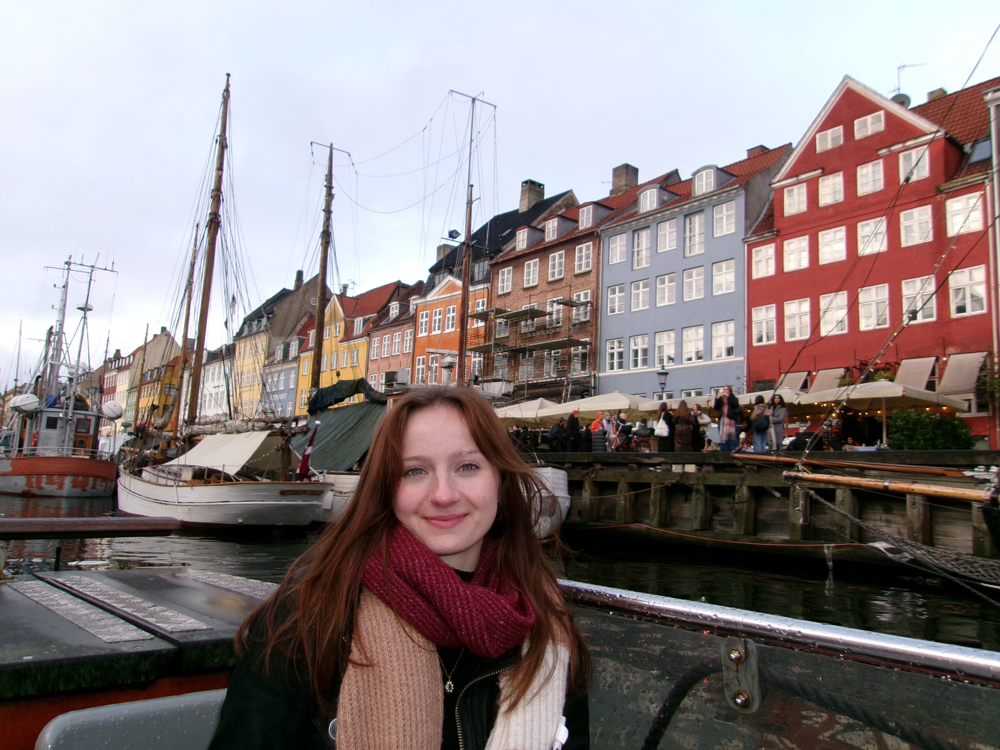

Hello! I'm Tori, a graduate of Loyola University Chicago with a bachelor's in Visual Communications and Psychology. As a narrative-driven designer, I believe the most powerful work happens at the intersection of emotion and craft — where a viewer doesn't just see a design, but feels it.
My background in both disciplines shapes how I approach every project: with curiosity about the human experience and a genuine care for how design can reflect it. I love making work that's vulnerable, purposeful, and honest — using design as a way to tell stories and build real connections.
Outside of design, I love spending time with friends, going for long walks and bike rides, exploring the city, or working on a fun craft while watching a movie. I also love to travel — meeting new people, trying new foods, and immersing myself in different cultures.